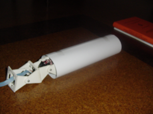
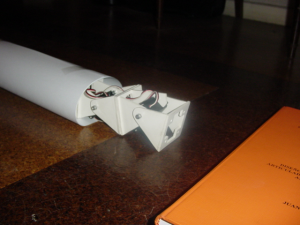
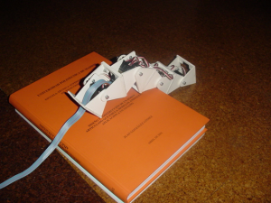

Para comprobar la versatilidad de Cube Reloaded se le hizo atravesar un circuito de pruebas constituido por un cilindro de cartón de 8cm de diámetro y un escalón de 3'5cm de altura. Para el control se usa la tarjeta CT6811, conectada a un PC, donde el operador selecciona los patrones de movimiento más adecuados para cada obstáculo.

El primer obstáculo representa una restricción en la altura máxima que puede alcanzar, por lo que deberá moverse con una amplitud pequeña, lo que tendrá como contrapartida que irá muy despacio. Eligiendo una semionda de amplitud 10 y longitud de onda 250 (parámetros del programa cube-virtual) se consigue atravesar el tubo.
|
 |
 |
Para superar el escalón es necesario que la amplitud sea lo suficientemente grande como para que la cabeza del gusano pueda apoyarse en su superficie. Seleccionando la misma onda anterior pero con una amplitud de 50 se consigue tanto subir como bajar el escalón.

|
 |
Después del escalón ya no quedan obstáculos, sólo un terreno plano, por lo que se utiliza una onda periódica con k=2 y amplitud de 29, para conseguir la máxima velocidad de avance